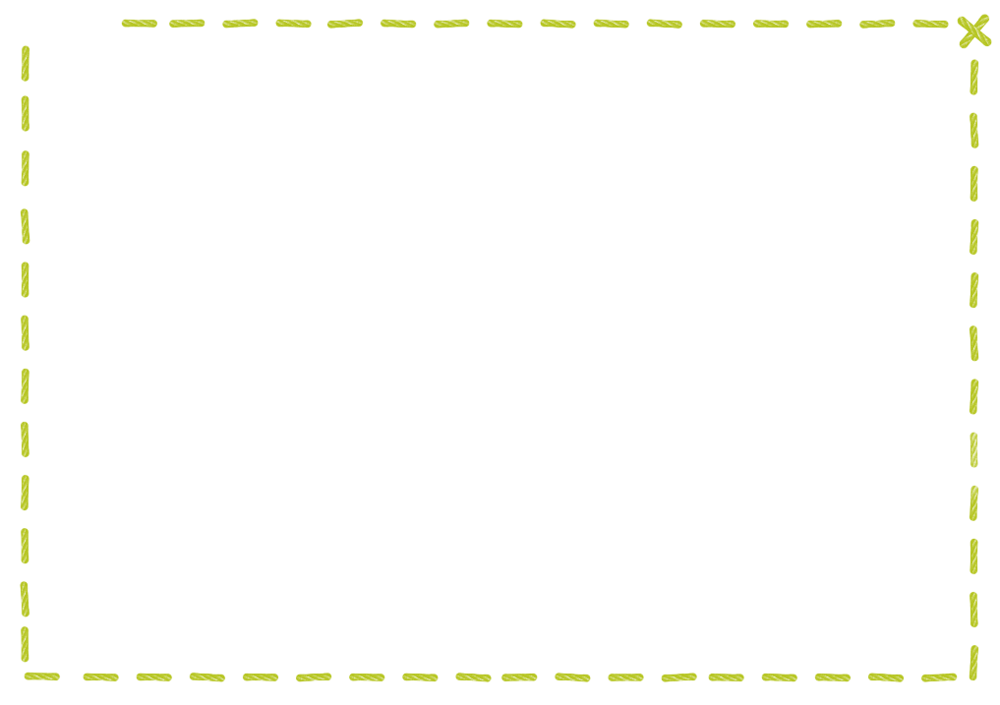

Вашкала дыръя асьме нюлэсъёсын лыдъяны сузёнтэм пӧйшурез но, тылобурдоез но вылэм. Сомында кыйкайёс* пӧлын тужгес но лябъёсыз вал ӵушъялъёс. Соос угось кемалась дыръёсы венё шуба нуллӥллямтэ на. Нюлэскын улӥсьёс та мискиньёсты капчиен ӝоже уськытъязы. Пумитъяськыны ӵушъялъёслэн пыдъёссы но вакчиесь, ымъёссы но пичиесь… пегӟемзы но ӝогак ӧз луылы. Погыли кадь питраны ӧдъяло гинэ — сьӧсь тылобурдо яке пӧйшур шоп! гинэ кырме вылэм ни. Озьы та мусо пӧйшуръёс пумен ӧжытгес но ӧжытгес кылиллям. Асьме нюлэсъёсын, пе, кык-куинь ӵушъял гинэ вал на. Тазьы оген кылемезлы кӧтыз ӝож луэмен пуке ни, пе, мумы ӵушъял бадӟым кыз улын. ӝоген пиосыз вордскозы. Собере пиоссэ кин ке нош ик быдтоз. Мур куректыса, зар-зар бӧрдэ ини таид. ӧжытак буйгамез бере, сиён утчаны мыноно кариськиз. Нош султэмез уг луы. Сиресь писпу борды лякиськем. Озьы но, тазьы но курадӟиз — мырдэм но кызьы мозмытскиз ик. Табере небыт шубазэ сузяны малпаз ни. Кыз улын погылляськиз — погылляськиз но — сирез уг усьы. Бордаз уката ӵогыр-ӵогыр кыз лыс лякиське. ӵапак озьы вырон вакытаз вӧзтӥз ӟичы кума ортче вылэм. — Ӵушъял, ӵушъял, оло, монэ возьмаса-а тон тазьы кыллиськод? Туж умой. Тонэ сии ке, луд кечъёс сьӧры нунал лумбыт жуммыса бызьылоно уз луы ни. Мискинь пӧйшур солэн пумитаз вазьыны ик уг дӥсьты ни, пе. сокем зол кышкам-куалектэм. ӵушъялэз ӟичы сиыны малпам гинэ но, кузь ныр йылаз веньёс бышкалскиллям. “ӧб-ӧб-ӧб! Ой-ой-ой! Быриськиз!” — тазьы кесяськыса, кызьы пегӟемзэ но ӧвӧл валам ни кузь быж. Пегӟе-бызе но шуак Кион шоры мырӟиське. — Кытчы озьы ӟичы кума дыртӥськод? Оло Гондырлэсь сиёнзэ лушканы малпад вал-а? — Дыртӥсько, дыртӥсько, Кион кудо. Кытчы дыртӥсько?! Бадӟым кыз улын ӵушъял кылле, сое сиыны тусьты-пуньылы бызисько. — Дырты-бызьы соку, тон ветлытозь мон содэ возьмало, — озьы шуэм но Кион дыртэм ӵушъялэз утчаны. Кышкам пӧйшур азьло сямен ик интыысьтыз вырӟылыны дӥсьтытэк кылле на, пе. ӟичылэсь вуэмзэ Кион возьмамтэ ни: ӵушъялэз лэчыт пиньёсыныз куртчыны малпам, но кыл йылаз ӵогы кадь веньёс мертчиськиллям. Таиз но ури-бери пегӟем ӵушъял дорысь. Ваньзэ та учырез Коӵо синйылтэм. Трос-а, ӧжыт-а дыр ортчем — быдэс нюлэс тодэм ни, кызьы ӵушъял дышетэм ӟичы кумаен Кион кудоез. ӵушъяллы аслыз но кельшем выль выль дӥськутэз. Со дырысен, пе, венё шубазэ тол но, гужем но уг куя ни. пиосыз но венё вордско. Нокин уг дӥсьты соосты ӝоже уськытыны. *Кыйкай — кыр тылобурдоос но пӧйшуръёс.
Кызьы ӵушъялъёс венё луизы
В стародавние времена в наших лесах и птиц, и зверья разного было видимо-невидимо. И всем было хорошо – кроме ежей. В ту пору колючую шубку они еще не носили, не было ее, и каждый кто хотел, мог их обидеть. Да и как убережешься: лапки у ежика коротенькие, зубы нестрашные. Ни тебе убежать, ни оборониться, ни спрятаться. Свернется бедняга от страха в клубочек, дрожит, а хищному зверю или птице только того и надо – хоп! – и нет ежика. С каждым днем несчастных зверюшек все меньше и меньше становилось. Так бы, глядишь, и совсем пропали, – если бы не случай. Плакала как-то под темной елью одинокая Ежиха. Да и как не плакать: придет время, родятся у нее ежата, а кто-то зубастый истребит их без всякой жалости. Горько плакала она. Только ведь слезами сыт не будешь, – отплакавшись, решила Ежиха поискать себе какой-нибудь еды. Но вот беда: решить-то решила, а подняться – никак. Оказывается, плакала она не одна, плакала с ней и большая ель. Катились по стволу смоляные слезы, вот к этой смоле Ежиха и прилипла. И так, и эдак старалась – насилу оторвалась. А вся спинка в смоле. Попробовала Ежиха отчистить нежную свою шубку, покаталась-потерлась по травке, – нет, не отстает смола. Только поналипли на неё ещё гуще еловые колючки-хвоинки. А тут, откуда не возьмись – кума Лиса. – Ишь ты, Ежиха! Гляди-ка, разлеглась, будто меня и ждала. Вот и славно! Сейчас я тебя съем, не придется целый день, высунув язык, за зайцами гоняться. Бедная Ежиха и голоса лишилась. До того испугалась, что слова не вымолвит. Только в комочек сжалась и вся затряслась. А Лисица распахнула пасть, да со всего маху и наткнулась длинным носом на иголки. «Ой-ой-ой! Пропадаю!» – заверещала кума и бросилась наутек. Неслась рыжая, не разбирая пути, чуть Волка с ног не сшибла. – Куда это ты, кума, разогналась? Будто собаки за тобой гонятся. – Ой, некогда, некогда мне, сват, тороплюсь. Под большой елью Ежиха лежит. За чашками-ложками бегу! – А-а, тогда поспешай. А я, кума, твою добычу пока покараулю! – Обрадовался Волк и во всю прыть помчался под большую ель. «Беги, беги, рыжая, а я без чашки-ложки обойдусь! Разинув с разбегу пасть, хвать Ежиху, да так и напоролся на иголки. Завизжал по-щенячьи и бросился прочь. Так бы дело и кончилось, да всю историю видела Сорока. И раззвонила-разнесла по всей округе, как проучила Ежиха куму Лису и свата Волка. Попробуй, тронь теперь её, колючую! А Ежихе новая одежка и самой по вкусу пришлась. С той поры ни зимой, ни летом шубку свою игольчатую не снимает. И детишки-ежата сразу «колючими» рождаются. И никто их больше не обижает.
Как ёжики стали колючими
Ельцов Алексей